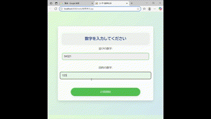

プロフィール
学生時代からものづくりが好きで、自分で仕組みを考えて形にすることに魅力を感じてきました。情報処理技術者試験に取り組む中でITへの関心がさらに深まり、現在はアルゴリズムの理解を深めるためにAtCoderにも挑戦しています。将来的には、生活の中の不便を解決するようなフルスタックエンジニアを目指しています。
技術スタック
- Java（基本文法とアルゴリズム実装に習熟）
- SQL / MySQL（HeidiSQLで基本操作）
- HTML / CSS / JavaScript（基本的なWebページ作成レベル）
- Git / GitHub（基本的な操作とブランチ運用）
成果物
ガチャ確率シミュレータ
包除原理で高速化した確率計算ツール。
排出対象の条件を入力すると、包除原理に基づいて当選確率を高速に計算し、結果をグラフで表示します。
Javaの BigIntegerやBigDecimal を活用して大きい数字にも対応できるようにしました。
また、BigIntegerやBigDecimalでは Math.pow() が使えないため、独自に累乗処理のメソッドを実装しました。単純に掛け算を繰り返すのではなく、指数の2進展開を使った高速累乗法（繰り返し二乗法）を取り入れることで、計算量の削減と実行時間の短縮を図りました。

数字の並びジェネレータ
与えられた条件に沿って数列を自動生成するWebアプリです。パズル系。厳密な最適化ではなく、処理中に小数が出てこないような式を優先的に採用することで、計算量を抑える工夫を行いました。こちらもBigIntegerを使用して大きい数字にも対応できるようにしました。Javaによる組合せ処理を通して、問題の整理と実装のバランスを学ぶことができました。
現在学んでいること
現在はAtCoderを通じて、アルゴリズムとデータ構造の理解を深めています。競技プログラミングに取り組むことで、限られた時間内で問題の本質を見抜き、適切な解法を選ぶ力を養っています。将来的に、設計や実装の場面でも役立つような思考力を身につけたいと考えています。
今後の目標
今後はAtCoderでより高いレベルを目指すと同時に、その知識を実際のWebサービスや業務システムの開発にも応用できるようなスキルに育てていきたいです。
連絡先
- GitHub: @nleeeeon